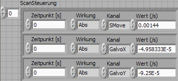

ScanControl
Scan control language to describe a 2 or more dimensional path.
It is based on an array of position and velocity numbers.
|
Galvo1 e.g. x
|
Galvo2 e.g. x |
Galvo3
|
Device4
|
position
|
123
|
1000
|
0
|
0
|
velocity
|
0
|
10
|
0
|
0
|
There is a loop (constant time interval) that updates (send to galvo)
the position and adds the velocity to the position.
Before the update the loop looks for commands that change the numbers
in the array.
The commands consist of :
- a time or a loop number when the command is to be used
- a description what do do (e.g. change the velocity, change the
position or add to the position)
- a value
Commands for the Digital galvo board:
see Original decription
Description, Loop counter, Channel, Value
like:
V,0,3,-531952
V,0,4,-992382A
S,120,9,751
E,3345,9,0
Description:
V: Value: Absolute position
I: Increment: velocity
R: Relative: add to absolute
S: Start program loop (Value: number of repeats)
E: End program loop
Channel:
3: Galvo 1
4: Galvo 2
5: Galvo 3
7: Digital channels
9: Loop conter
Value
Integer Number.
Multiply the 16bit Galvo values with 2^20 ("mycro counts")
To send this commands via RS232: an A before the command tells the
reciever to Add this command to the program. A C clears the old comand
list. A X executes a program. Any character cancels a program...
Commands used in Labview
Use the "ScanControl/ScanControl.ctl" Control element.

- Zeitpunkt: Time in seconds. (Take care when you want to send the
scan to the digital control board: Time has to be a multiple of the
Galvo-Clock (10 or 12µs) because there it has to be an integer)
- Wirkung: Abs: set poition, Rel:
add to position, inc: set velocity, LoopStart, LoopEnd
- Kanal: GalvoX,GalvoY, ImageX, DigitalOut,......
- Wert: Value in meter (or m/s for the inc command, or pixel for
the Image Channels, or pixel/s for inc+Image, or s for the SMove
Channel)
Limitations
At the moment there is some limitations when designing scans for Colibri.
- Only one (the first) "Inc-Image1X" is used to set the Pixel dwell time for the rest of the image (difficult to change, i use a constant pixel dwell time).
- Only the pixels in one image can be described with Image1X Image1Y. Of course you can use several channels (difficult to change).
- The digital trigger to synchronize Galvo and AD-conversion is asumed to be at t=0 (digital only, medium to change)
- Do not use negative image pixel coordiantes (could crash?, medium to fix).
- Only one loop can be used with the contionous run option (will be possible soon).
Examples
V,0,3,-100
V,1,3,-50 set to -50
I,1,3,10 set velocity to 10
I,10,3,0 after 9 cycles set
velocity back to 0
produces:
time
|
0
|
1
|
2
|
3
|
4
|
5
|
6
|
7
|
8
|
9
|
10
|
11...
|
pos=galvo
|
-100
|
-50
|
-40
|
-30
|
-20
|
-10
|
0
|
10
|
20
|
30
|
40
|
40
|
inc
|
0 (startup)
|
10
|
10
|
10
|
10
|
10
|
10
|
10
|
10
|
10
|
0
|
0
|
Sawtooth
10 times, 12 ms ramp, 1E6 amplitude, 3=XGalvo:
C
Clear
AV,0,3,0 Start with 0
AS,0,0,10 Loop 10 times
AI,0,3,1000 ramp up with 1000
per step
AI,500,3,-1000 ramp down with 1000 per step
AI,1500,3,1000 ramp up with 1000 per step
AE,2000,0,0 now we are at 0 again
and repeat this loop
AI,20001,3,0 after the loop: stop
last ramp up